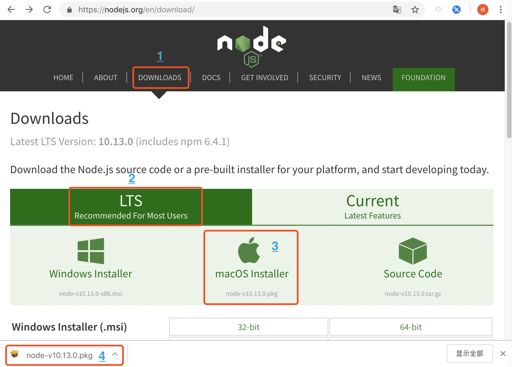

<!DOCTYPE html>
<html lang="zh-cn,ja,en,default">
    
<head>
    <meta charset="UTF-8">
    <meta name="viewport" content="width=device-width, initial-scale=1">
    <meta name="generator" content="">
    <title>Mac + Atom + Hexo + hexo-theme-tranquilpeak主题 + GitHub + 全球IP - null</title>
    <meta name="author" content="He Gong">
    
    
    
    <script type="application/ld+json">{"@context":"http://schema.org","@type":"BlogPosting","author":{"@type":"Person","name":"He Gong","sameAs":["https://github.com/","http://stackoverflow.com/users","https://twitter.com/","https://facebook.com/","https://plus.google.com/","https://www.linkedin.com/profile/","mailto"],"image":"http://ww3.sinaimg.cn/large/006tNc79gw1fb0neee6mlj30dw0aldgf.jpg"},"articleBody":"Mac环境,搭建Blog整体解决方案.\n\nMac运行环境配置&#9939;Homebrew安装目的: 使用Homebrew安装其他环境和软件.流程: 打开terminal,执行下面1的命令.\n\n输入 /usr/bin/ruby -e &quot;$(curl -fsSL https://raw.githubusercontent.com/Homebrew/install/master/install)&quot;命令.\n看到提示后,按RETURN(回车键).\n输入电脑密码.\n\n\n\n\n自动下载安装命令行工具.\n\n\n\n\n安装成功的提示.\nHomebrew的相关说明和命令.(官网: https://brew.sh/index_zh-cn.html)\n\n\n&#9939;Node.js安装目的: 安装Node.js环境.流程: 去官网下载安装macOS的安装包(官网: https://nodejs.org/en/).\n\n选择DOWNLOADS.\n选择左侧稳定版本.\n选择macOS Installer.\n下载成功会在左下角显示.\n\n\n\n\n双击下载的pkg包.\n\n\n\n\n点击安装的时候, 会要求输入电脑密码.\n\n\n\n\n如下图中1所示, 安装成功(使用node -v可以查版本号).\n点击下图中2按钮, 会提示是否删除安装包, 直接删除就好.\n\n\n&#9939;Git安装目的: 安装Git版本控制.流程: 打开terminal,执行brew install git命令.\n\n输入 brew install git命令.\n如下图中2所示,安装成功.\n\n\nAtom安装和配置&#9939;Atom安装(使用VSCode也可以)目的: 安装Atom.流程: 去官网下载安装.\n\n官网: https://atom.io/.\n点击下图中2所示,进行下载.\n下载成功.\n\n\n&#9939;Atom配置Hexo安装和配置&#9939;Hexo安装目的: 安装hexo.流程: 打开terminal,执行npm install -g hexo-cli命令.\n\n输入 npm install -g hexo-cli .\n如下图中2所示,安装成功.\n\n\n&#9939;blog文件夹创建目的: 创建名称为blog的文件夹.流程: 打开terminal,执行hexo init blog命令.\n\n输入 hexo init blog .\n如下图中2篮框所示,是blog的路径.\n如下图3所示,创建成功.\n\n\n&#9939;blog文件夹层级结构说明目的: 查看blog文件夹层级结构.流程: 打开terminal,执行cd blog命令.\n\n输入 cd blog, 可以直接打开blog的文件夹, 或者直接使用command + shift + g, 输入文件夹路径前往.\n输入 ls, 显示文件结构.如下图2所示.\n_config.yml: blog配置文件.\nsource: 资源文件.\nthemes: 主题文件.\npublic: 打包的静态文件.\n\n\n&#9939;blog本地server启动目的: 启动本地的server.流程: 打开terminal,执行hexo server命令.\n\n输入 hexo server.\n如下图2所示, 使用浏览器打开 http://localhost:4000,\n\n\n&#9939;Hexo配置&#9939;Hexo命令主题安装和配置&#9939;主题安装&#9939;主题配置GitHub配置必须有GitHub账号.\n\n&#9939;Github仓库创建目的: 创建Blog的仓库.流程: 进入github个人界面.\n\n点击Repositories\n点击New\n\n\n&#9939;Github仓库配置目的: 进行仓库配置.流程: 进入仓库配置界面\n\nOwner: 蓝色区域显示当前角色的用户名,可以选择使用指定角色来创建仓库(如果包含组织,也可以使用组织名来创建).\nRepository Name: 仓库名称, 必须使用  “用户名.github.io”, 用户名就是蓝色区域显示的名称.\nDescription: 仓库的描述.\n选择仓库是公开库,还是私有库,私有库是收费的.\n初始化README描述文件.\n选择库的语言类型,Blog会有很多种语言类型,所以直接使用None.\n选择执照, MIT 或 Apache 或 None都可以.\n点击Creat repository, 创建仓库.\n\n\n&#9939;Github仓库 –&gt; GitHub Pages设置目的: 配置GitHub Pages.流程: 进入Settings界面,配置GitHub Pages.\n\n点击Settings\n\n\n\n\n生成的博客地址,Blog发布后,可以直接访问.\nSource: 自己选择分支,可使用主分支.\nTheme Chooser: 不用选择.\nCustom domain: 全球IP,如果购买了全球IP,则在这个地方进行设置,可以直接通过全球IP访问Blog.\n开启HTTPS.\n\n\n&#9939;Blog生成地址替换目的: Blog生成地址替换.流程: 进入github个人界面,替换_config.yml中的repository的值.\n\n点击Clone or download.\n复制地址(例:https://github.com/13104495959/13104495959.github.io.git),去掉.git的后缀变成(例:https://github.com/13104495959/13104495959.github.io)\n\n\n\n\n进入blog目录下面的_config.yml.\n使用命令查看路径\n\n\n\n\n替换黄色方框中的属性.\ntype: 版本管理方式, 此博客中使用git.\nrepository: 上面复制并且去掉后缀的地址(https://github.com/13104495959/13104495959.github.io).\nbranch: 选择分支,此博客中使用主分支.\n\n\n\n\n\n\b文件层级结构说明图片使用说明\n","dateCreated":"2018-11-05T14:59:19+09:00","dateModified":"2018-11-15T12:39:21+09:00","datePublished":"2018-11-05T14:59:19+09:00","description":"Mac环境,搭建Blog整体解决方案.","headline":"Mac + Atom + Hexo + hexo-theme-tranquilpeak主题 + GitHub + 全球IP","image":[],"mainEntityOfPage":{"@type":"WebPage","@id":"http://yoursite.com/2018/11/05/1/"},"publisher":{"@type":"Organization","name":"He Gong","sameAs":["https://github.com/","http://stackoverflow.com/users","https://twitter.com/","https://facebook.com/","https://plus.google.com/","https://www.linkedin.com/profile/","mailto"],"image":"http://ww3.sinaimg.cn/large/006tNc79gw1fb0neee6mlj30dw0aldgf.jpg","logo":{"@type":"ImageObject","url":"http://ww3.sinaimg.cn/large/006tNc79gw1fb0neee6mlj30dw0aldgf.jpg"}},"url":"http://yoursite.com/2018/11/05/1/"}</script>
    <meta name="description" content="Mac环境,搭建Blog整体解决方案.">
<meta property="og:type" content="blog">
<meta property="og:title" content="Mac + Atom + Hexo + hexo-theme-tranquilpeak主题 + GitHub + 全球IP">
<meta property="og:url" content="http://yoursite.com/2018/11/05/1/index.html">
<meta property="og:site_name">
<meta property="og:description" content="Mac环境,搭建Blog整体解决方案.">
<meta property="og:locale" content="zh-cn">
<meta property="og:image" content="http://yoursite.com/2018/11/05/1/1.1.1.png">
<meta property="og:image" content="http://yoursite.com/2018/11/05/1/1.1.2.png">
<meta property="og:image" content="http://yoursite.com/2018/11/05/1/1.1.3.png">
<meta property="og:image" content="http://yoursite.com/2018/11/05/1/1.2.1.png">
<meta property="og:image" content="http://yoursite.com/2018/11/05/1/1.2.2.png">
<meta property="og:image" content="http://yoursite.com/2018/11/05/1/1.2.3.png">
<meta property="og:image" content="http://yoursite.com/2018/11/05/1/1.2.4.png">
<meta property="og:image" content="http://yoursite.com/2018/11/05/1/1.2.5.png">
<meta property="og:image" content="http://yoursite.com/2018/11/05/1/1.2.6.png">
<meta property="og:image" content="http://yoursite.com/2018/11/05/1/1.2.7.png">
<meta property="og:image" content="http://yoursite.com/2018/11/05/1/1.3.1.png">
<meta property="og:image" content="http://yoursite.com/2018/11/05/1/2.1.1.png">
<meta property="og:image" content="http://yoursite.com/2018/11/05/1/3.1.1.png">
<meta property="og:image" content="http://yoursite.com/2018/11/05/1/3.2.1.png">
<meta property="og:image" content="http://yoursite.com/2018/11/05/1/3.2.2.png">
<meta property="og:image" content="http://yoursite.com/2018/11/05/1/3.3.1.png">
<meta property="og:image" content="http://yoursite.com/2018/11/05/1/3.4.1.png">
<meta property="og:image" content="http://yoursite.com/2018/11/05/1/5.1.1.png">
<meta property="og:image" content="http://yoursite.com/2018/11/05/1/5.2.1.png">
<meta property="og:image" content="http://yoursite.com/2018/11/05/1/5.3.1.png">
<meta property="og:image" content="http://yoursite.com/2018/11/05/1/5.3.2.png">
<meta property="og:image" content="http://yoursite.com/2018/11/05/1/5.4.1.png">
<meta property="og:image" content="http://yoursite.com/2018/11/05/1/5.4.2.png">
<meta property="og:image" content="http://yoursite.com/2018/11/05/1/5.4.3.png">
<meta property="og:updated_time" content="2018-11-15T03:39:21.064Z">
<meta name="twitter:card" content="summary">
<meta name="twitter:title" content="Mac + Atom + Hexo + hexo-theme-tranquilpeak主题 + GitHub + 全球IP">
<meta name="twitter:description" content="Mac环境,搭建Blog整体解决方案.">
<meta name="twitter:image" content="http://yoursite.com/2018/11/05/1/1.1.1.png">
    
    
        
    
    
        <meta property="og:image" content="http://ww3.sinaimg.cn/large/006tNc79gw1fb0neee6mlj30dw0aldgf.jpg"/>
    
    
    
    
    <!--STYLES-->
    <link rel="stylesheet" href="/assets/css/style-du2xmrqdqrl2ollgeiw050kpl6l4nbyz7bumjuurjgsxyopifvukebxc9lqe.min.css">
    <!--STYLES END-->
    

    
</head>

    <body>
        <div id="blog">
            <!-- Define author's picture -->


    
        
            
        
    

<header id="header" data-behavior="4">
    <i id="btn-open-sidebar" class="fa fa-lg fa-bars"></i>
    <div class="header-title">
        <a class="header-title-link" href="/ "></a>
    </div>
    
        
            <a class="header-right-picture " href="#about">
        
        
            
        
        </a>
    
</header>

            <!-- Define author's picture -->


        
    

<nav id="sidebar" data-behavior="4">
    <div class="sidebar-container">
        
            <div class="sidebar-profile">
                <a href="/#about">
                    
                </a>
                <h4 class="sidebar-profile-name">He Gong</h4>
                
                    <h5 class="sidebar-profile-bio"><p>author.bio</p>
</h5>
                
            </div>
        
        
            <ul class="sidebar-buttons">
            
                <li class="sidebar-button">
                    
                        <a class="sidebar-button-link " href="/ " title="首页">
                    
                        <i class="sidebar-button-icon fa fa-home" aria-hidden="true"></i>
                        <span class="sidebar-button-desc">首页</span>
                    </a>
            </li>
            
                <li class="sidebar-button">
                    
                        <a class="sidebar-button-link " href="/all-categories" title="分类">
                    
                        <i class="sidebar-button-icon fa fa-bookmark" aria-hidden="true"></i>
                        <span class="sidebar-button-desc">分类</span>
                    </a>
            </li>
            
                <li class="sidebar-button">
                    
                        <a class="sidebar-button-link " href="/all-tags" title="标签">
                    
                        <i class="sidebar-button-icon fa fa-tags" aria-hidden="true"></i>
                        <span class="sidebar-button-desc">标签</span>
                    </a>
            </li>
            
                <li class="sidebar-button">
                    
                        <a class="sidebar-button-link " href="/all-archives" title="归档">
                    
                        <i class="sidebar-button-icon fa fa-archive" aria-hidden="true"></i>
                        <span class="sidebar-button-desc">归档</span>
                    </a>
            </li>
            
                <li class="sidebar-button">
                    
                        <a class="sidebar-button-link open-algolia-search" href="#search" title="搜索">
                    
                        <i class="sidebar-button-icon fa fa-search" aria-hidden="true"></i>
                        <span class="sidebar-button-desc">搜索</span>
                    </a>
            </li>
            
                <li class="sidebar-button">
                    
                        <a class="sidebar-button-link " href="#about" title="关于">
                    
                        <i class="sidebar-button-icon fa fa-question" aria-hidden="true"></i>
                        <span class="sidebar-button-desc">关于</span>
                    </a>
            </li>
            
        </ul>
        
            <ul class="sidebar-buttons">
            
                <li class="sidebar-button">
                    
                        <a class="sidebar-button-link " href="https://github.com/" target="_blank" rel="noopener" title="GitHub">
                    
                        <i class="sidebar-button-icon fab fa-github" aria-hidden="true"></i>
                        <span class="sidebar-button-desc">GitHub</span>
                    </a>
            </li>
            
                <li class="sidebar-button">
                    
                        <a class="sidebar-button-link " href="http://stackoverflow.com/users" target="_blank" rel="noopener" title="Stack Overflow">
                    
                        <i class="sidebar-button-icon fab fa-stack-overflow" aria-hidden="true"></i>
                        <span class="sidebar-button-desc">Stack Overflow</span>
                    </a>
            </li>
            
                <li class="sidebar-button">
                    
                        <a class="sidebar-button-link " href="https://twitter.com/" target="_blank" rel="noopener" title="Twitter">
                    
                        <i class="sidebar-button-icon fab fa-twitter" aria-hidden="true"></i>
                        <span class="sidebar-button-desc">Twitter</span>
                    </a>
            </li>
            
                <li class="sidebar-button">
                    
                        <a class="sidebar-button-link " href="https://facebook.com/" target="_blank" rel="noopener" title="Facebook">
                    
                        <i class="sidebar-button-icon fab fa-facebook" aria-hidden="true"></i>
                        <span class="sidebar-button-desc">Facebook</span>
                    </a>
            </li>
            
                <li class="sidebar-button">
                    
                        <a class="sidebar-button-link " href="https://plus.google.com/" target="_blank" rel="noopener" title="Google Plus">
                    
                        <i class="sidebar-button-icon fab fa-google-plus" aria-hidden="true"></i>
                        <span class="sidebar-button-desc">Google Plus</span>
                    </a>
            </li>
            
                <li class="sidebar-button">
                    
                        <a class="sidebar-button-link " href="https://www.linkedin.com/profile/" target="_blank" rel="noopener" title="LinkedIn">
                    
                        <i class="sidebar-button-icon fab fa-linkedin" aria-hidden="true"></i>
                        <span class="sidebar-button-desc">LinkedIn</span>
                    </a>
            </li>
            
                <li class="sidebar-button">
                    
                        <a class="sidebar-button-link " href="/mailto" title="邮箱">
                    
                        <i class="sidebar-button-icon fa fa-envelope" aria-hidden="true"></i>
                        <span class="sidebar-button-desc">邮箱</span>
                    </a>
            </li>
            
        </ul>
        
            <ul class="sidebar-buttons">
            
                <li class="sidebar-button">
                    
                        <a class="sidebar-button-link " href="/atom.xml" title="RSS">
                    
                        <i class="sidebar-button-icon fa fa-rss" aria-hidden="true"></i>
                        <span class="sidebar-button-desc">RSS</span>
                    </a>
            </li>
            
        </ul>
        
    </div>
</nav>

            
            <div id="main" data-behavior="4"
                 class="
                        hasCoverMetaIn
                        ">
                
<article class="post">
    
    
        <div class="post-header main-content-wrap text-left">
    
        <h1 class="post-title">
            Mac + Atom + Hexo + hexo-theme-tranquilpeak主题 + GitHub + 全球IP
        </h1>
    
    
        <div class="post-meta">
    <time datetime="2018-11-05T14:59:19+09:00">
	
		    11月 05, 2018
    	
    </time>
    
</div>

    
</div>

    
    <div class="post-content markdown">
        <div class="main-content-wrap">
            <p><strong><span class="highlight-text primary">Mac环境,搭建Blog整体解决方案.</span></strong><br><a id="more"></a></p>
<h1 id="table-of-contents">目录</h1><ol class="toc"><li class="toc-item toc-level-1"><a class="toc-link" href="#Mac运行环境配置"><span class="toc-text">Mac运行环境配置</span></a><ol class="toc-child"><li class="toc-item toc-level-2"><a class="toc-link" href="#9939-Homebrew安装"><span class="toc-text">⛓Homebrew安装</span></a></li><li class="toc-item toc-level-2"><a class="toc-link" href="#9939-Node-js安装"><span class="toc-text">⛓Node.js安装</span></a></li><li class="toc-item toc-level-2"><a class="toc-link" href="#9939-Git安装"><span class="toc-text">⛓Git安装</span></a></li></ol></li><li class="toc-item toc-level-1"><a class="toc-link" href="#Atom安装和配置"><span class="toc-text">Atom安装和配置</span></a><ol class="toc-child"><li class="toc-item toc-level-2"><a class="toc-link" href="#9939-Atom安装-使用VSCode也可以"><span class="toc-text">⛓Atom安装(使用VSCode也可以)</span></a></li><li class="toc-item toc-level-2"><a class="toc-link" href="#9939-Atom配置"><span class="toc-text">⛓Atom配置</span></a></li></ol></li><li class="toc-item toc-level-1"><a class="toc-link" href="#Hexo安装和配置"><span class="toc-text">Hexo安装和配置</span></a><ol class="toc-child"><li class="toc-item toc-level-2"><a class="toc-link" href="#9939-Hexo安装"><span class="toc-text">⛓Hexo安装</span></a></li><li class="toc-item toc-level-2"><a class="toc-link" href="#9939-blog文件夹创建"><span class="toc-text">⛓blog文件夹创建</span></a></li><li class="toc-item toc-level-2"><a class="toc-link" href="#9939-blog文件夹层级结构说明"><span class="toc-text">⛓blog文件夹层级结构说明</span></a></li><li class="toc-item toc-level-2"><a class="toc-link" href="#9939-blog本地server启动"><span class="toc-text">⛓blog本地server启动</span></a></li><li class="toc-item toc-level-2"><a class="toc-link" href="#9939-Hexo配置"><span class="toc-text">⛓Hexo配置</span></a></li><li class="toc-item toc-level-2"><a class="toc-link" href="#9939-Hexo命令"><span class="toc-text">⛓Hexo命令</span></a></li></ol></li><li class="toc-item toc-level-1"><a class="toc-link" href="#主题安装和配置"><span class="toc-text">主题安装和配置</span></a><ol class="toc-child"><li class="toc-item toc-level-2"><a class="toc-link" href="#9939-主题安装"><span class="toc-text">⛓主题安装</span></a></li><li class="toc-item toc-level-2"><a class="toc-link" href="#9939-主题配置"><span class="toc-text">⛓主题配置</span></a></li></ol></li><li class="toc-item toc-level-1"><a class="toc-link" href="#GitHub配置"><span class="toc-text">GitHub配置</span></a><ol class="toc-child"><li class="toc-item toc-level-2"><a class="toc-link" href="#9939-Github仓库创建"><span class="toc-text">⛓Github仓库创建</span></a></li><li class="toc-item toc-level-2"><a class="toc-link" href="#9939-Github仓库配置"><span class="toc-text">⛓Github仓库配置</span></a></li><li class="toc-item toc-level-2"><a class="toc-link" href="#9939-Github仓库-–-gt-GitHub-Pages设置"><span class="toc-text">⛓Github仓库 –&gt; GitHub Pages设置</span></a></li><li class="toc-item toc-level-2"><a class="toc-link" href="#9939-Blog生成地址替换"><span class="toc-text">⛓Blog生成地址替换</span></a></li></ol></li></ol>
<h1 id="Mac运行环境配置"><a href="#Mac运行环境配置" class="headerlink" title="Mac运行环境配置"></a><table><tr><td bgcolor="#7FFFD4">Mac运行环境配置</td></tr></table></h1><h2 id="9939-Homebrew安装"><a href="#9939-Homebrew安装" class="headerlink" title="&#9939;Homebrew安装"></a>&#9939;Homebrew安装</h2><div class="alert success info"><p>目的: 使用Homebrew安装其他环境和软件.<br>流程: 打开terminal,执行下面1的命令.</p>
<ol>
<li>输入 <code>/usr/bin/ruby -e &quot;$(curl -fsSL https://raw.githubusercontent.com/Homebrew/install/master/install)&quot;</code>命令.</li>
<li>看到提示后,按RETURN(回车键).</li>
<li>输入电脑密码.</li>
</ol>
<div class="figure left" style="width:;"><a class="fancybox" href="1.1.1.png" title="" data-caption="" data-fancybox="1"></a></div><div style="clear:both;"></div>

<ol>
<li>自动下载安装命令行工具.</li>
</ol>
<div class="figure left" style="width:;"><a class="fancybox" href="1.1.2.png" title="" data-caption="" data-fancybox="1"></a></div><div style="clear:both;"></div>

<ol>
<li>安装成功的提示.</li>
<li>Homebrew的相关说明和命令.(官网: <a href="https://brew.sh/index_zh-cn.html" target="_blank" rel="noopener">https://brew.sh/index_zh-cn.html</a>)</li>
</ol>
<div class="figure left" style="width:;"><a class="fancybox" href="1.1.3.png" title="" data-caption="" data-fancybox="1"></a></div><div style="clear:both;"></div></div>
<h2 id="9939-Node-js安装"><a href="#9939-Node-js安装" class="headerlink" title="&#9939;Node.js安装"></a>&#9939;Node.js安装</h2><div class="alert success info"><p>目的: 安装Node.js环境.<br>流程: 去官网下载安装macOS的安装包(官网: <a href="https://nodejs.org/en/)" target="_blank" rel="noopener">https://nodejs.org/en/)</a>.</p>
<ol>
<li>选择DOWNLOADS.</li>
<li>选择左侧稳定版本.</li>
<li>选择macOS Installer.</li>
<li>下载成功会在左下角显示.</li>
</ol>
<div class="figure left" style="width:;"><a class="fancybox" href="1.2.1.png" title="" data-caption="" data-fancybox="1"></a></div><div style="clear:both;"></div>

<ol>
<li>双击下载的pkg包.</li>
</ol>
<div class="figure left" style="width:;"><a class="fancybox" href="1.2.2.png" title="" data-caption="" data-fancybox="1"></a></div><div style="clear:both;"></div><br><div class="figure left" style="width:;"><a class="fancybox" href="1.2.3.png" title="" data-caption="" data-fancybox="1"></a></div><div style="clear:both;"></div><br><div class="figure left" style="width:;"><a class="fancybox" href="1.2.4.png" title="" data-caption="" data-fancybox="1"></a></div><div style="clear:both;"></div><br><div class="figure left" style="width:;"><a class="fancybox" href="1.2.5.png" title="" data-caption="" data-fancybox="1"></a></div><div style="clear:both;"></div>

<ol>
<li>点击安装的时候, 会要求输入电脑密码.</li>
</ol>
<div class="figure left" style="width:;"><a class="fancybox" href="1.2.6.png" title="" data-caption="" data-fancybox="1"></a></div><div style="clear:both;"></div>

<ol>
<li>如下图中1所示, 安装成功(使用<code>node -v</code>可以查版本号).</li>
<li>点击下图中2按钮, 会提示是否删除安装包, 直接删除就好.</li>
</ol>
<div class="figure left" style="width:;"><a class="fancybox" href="1.2.7.png" title="" data-caption="" data-fancybox="1"></a></div><div style="clear:both;"></div></div>
<h2 id="9939-Git安装"><a href="#9939-Git安装" class="headerlink" title="&#9939;Git安装"></a>&#9939;Git安装</h2><div class="alert success info"><p>目的: 安装Git版本控制.<br>流程: 打开terminal,执行brew install git命令.</p>
<ol>
<li>输入 <code>brew install git</code>命令.</li>
<li>如下图中2所示,安装成功.</li>
</ol>
<div class="figure left" style="width:;"><a class="fancybox" href="1.3.1.png" title="" data-caption="" data-fancybox="1"></a></div><div style="clear:both;"></div></div>
<h1 id="Atom安装和配置"><a href="#Atom安装和配置" class="headerlink" title="Atom安装和配置"></a><table><tr><td bgcolor="#7FFFD4">Atom安装和配置</td></tr></table></h1><h2 id="9939-Atom安装-使用VSCode也可以"><a href="#9939-Atom安装-使用VSCode也可以" class="headerlink" title="&#9939;Atom安装(使用VSCode也可以)"></a>&#9939;Atom安装(使用VSCode也可以)</h2><div class="alert success info"><p>目的: 安装Atom.<br>流程: 去官网下载安装.</p>
<ol>
<li>官网: <a href="https://atom.io/" target="_blank" rel="noopener">https://atom.io/</a>.</li>
<li>点击下图中2所示,进行下载.</li>
<li>下载成功.</li>
</ol>
<div class="figure left" style="width:;"><a class="fancybox" href="2.1.1.png" title="" data-caption="" data-fancybox="1"></a></div><div style="clear:both;"></div></div>
<h2 id="9939-Atom配置"><a href="#9939-Atom配置" class="headerlink" title="&#9939;Atom配置"></a>&#9939;Atom配置</h2><h1 id="Hexo安装和配置"><a href="#Hexo安装和配置" class="headerlink" title="Hexo安装和配置"></a><table><tr><td bgcolor="#7FFFD4">Hexo安装和配置</td></tr></table></h1><h2 id="9939-Hexo安装"><a href="#9939-Hexo安装" class="headerlink" title="&#9939;Hexo安装"></a>&#9939;Hexo安装</h2><div class="alert success info"><p>目的: 安装hexo.<br>流程: 打开terminal,执行npm install -g hexo-cli命令.</p>
<ol>
<li>输入 <code>npm install -g hexo-cli</code> .</li>
<li>如下图中2所示,安装成功.</li>
</ol>
<div class="figure left" style="width:;"><a class="fancybox" href="3.1.1.png" title="" data-caption="" data-fancybox="1"></a></div><div style="clear:both;"></div></div>
<h2 id="9939-blog文件夹创建"><a href="#9939-blog文件夹创建" class="headerlink" title="&#9939;blog文件夹创建"></a>&#9939;blog文件夹创建</h2><div class="alert success info"><p>目的: 创建名称为blog的文件夹.<br>流程: 打开terminal,执行hexo init blog命令.</p>
<ol>
<li>输入 <code>hexo init blog</code> .</li>
<li>如下图中2篮框所示,是blog的路径.</li>
<li>如下图3所示,创建成功.</li>
</ol>
<div class="figure left" style="width:;"><a class="fancybox" href="3.2.1.png" title="" data-caption="" data-fancybox="1"></a></div><div style="clear:both;"></div><br><div class="figure left" style="width:;"><a class="fancybox" href="3.2.2.png" title="" data-caption="" data-fancybox="1"></a></div><div style="clear:both;"></div></div>
<h2 id="9939-blog文件夹层级结构说明"><a href="#9939-blog文件夹层级结构说明" class="headerlink" title="&#9939;blog文件夹层级结构说明"></a>&#9939;blog文件夹层级结构说明</h2><div class="alert success info"><p>目的: 查看blog文件夹层级结构.<br>流程: 打开terminal,执行cd blog命令.</p>
<ol>
<li>输入 <code>cd blog</code>, 可以直接打开blog的文件夹, 或者直接使用command + shift + g, 输入文件夹路径前往.</li>
<li>输入 <code>ls</code>, 显示文件结构.如下图2所示.</li>
<li><code>_config.yml</code>: blog配置文件.</li>
<li><code>source</code>: 资源文件.</li>
<li><code>themes</code>: 主题文件.</li>
<li><code>public</code>: 打包的静态文件.</li>
</ol>
<div class="figure left" style="width:;"><a class="fancybox" href="3.3.1.png" title="" data-caption="" data-fancybox="1"></a></div><div style="clear:both;"></div></div>
<h2 id="9939-blog本地server启动"><a href="#9939-blog本地server启动" class="headerlink" title="&#9939;blog本地server启动"></a>&#9939;blog本地server启动</h2><div class="alert success info"><p>目的: 启动本地的server.<br>流程: 打开terminal,执行hexo server命令.</p>
<ol>
<li>输入 <code>hexo server</code>.</li>
<li>如下图2所示, 使用浏览器打开 <a href="http://localhost:4000" target="_blank" rel="noopener">http://localhost:4000</a>,<div class="figure left" style="width:;"><a class="fancybox" href="3.4.1.png" title="" data-caption="" data-fancybox="1"></a></div><div style="clear:both;"></div></li>
</ol>
</div>
<h2 id="9939-Hexo配置"><a href="#9939-Hexo配置" class="headerlink" title="&#9939;Hexo配置"></a>&#9939;Hexo配置</h2><h2 id="9939-Hexo命令"><a href="#9939-Hexo命令" class="headerlink" title="&#9939;Hexo命令"></a>&#9939;Hexo命令</h2><h1 id="主题安装和配置"><a href="#主题安装和配置" class="headerlink" title="主题安装和配置"></a><table><tr><td bgcolor="#7FFFD4">主题安装和配置</td></tr></table></h1><h2 id="9939-主题安装"><a href="#9939-主题安装" class="headerlink" title="&#9939;主题安装"></a>&#9939;主题安装</h2><h2 id="9939-主题配置"><a href="#9939-主题配置" class="headerlink" title="&#9939;主题配置"></a>&#9939;主题配置</h2><h1 id="GitHub配置"><a href="#GitHub配置" class="headerlink" title="GitHub配置"></a><table><tr><td bgcolor="#7FFFD4">GitHub配置</td></tr></table></h1><div class="alert success info"><p>必须有GitHub账号.</p>
</div>
<h2 id="9939-Github仓库创建"><a href="#9939-Github仓库创建" class="headerlink" title="&#9939;Github仓库创建"></a>&#9939;Github仓库创建</h2><div class="alert success info"><p>目的: 创建Blog的仓库.<br>流程: 进入github个人界面.</p>
<ol>
<li>点击Repositories</li>
<li>点击New</li>
</ol>
<div class="figure left" style="width:;"><a class="fancybox" href="5.1.1.png" title="" data-caption="" data-fancybox="1"></a></div><div style="clear:both;"></div></div>
<h2 id="9939-Github仓库配置"><a href="#9939-Github仓库配置" class="headerlink" title="&#9939;Github仓库配置"></a>&#9939;Github仓库配置</h2><div class="alert success info"><p>目的: 进行仓库配置.<br>流程: 进入仓库配置界面</p>
<ol>
<li>Owner: 蓝色区域显示当前角色的用户名,可以选择使用指定角色来创建仓库(如果包含组织,也可以使用组织名来创建).</li>
<li>Repository Name: 仓库名称, 必须使用  “用户名.github.io”, 用户名就是蓝色区域显示的名称.</li>
<li>Description: 仓库的描述.</li>
<li>选择仓库是公开库,还是私有库,私有库是收费的.</li>
<li>初始化README描述文件.</li>
<li>选择库的语言类型,Blog会有很多种语言类型,所以直接使用None.</li>
<li>选择执照, MIT 或 Apache 或 None都可以.</li>
<li>点击Creat repository, 创建仓库.</li>
</ol>
<div class="figure left" style="width:;"><a class="fancybox" href="5.2.1.png" title="" data-caption="" data-fancybox="1"></a></div><div style="clear:both;"></div></div>
<h2 id="9939-Github仓库-–-gt-GitHub-Pages设置"><a href="#9939-Github仓库-–-gt-GitHub-Pages设置" class="headerlink" title="&#9939;Github仓库 –&gt; GitHub Pages设置"></a>&#9939;Github仓库 –&gt; GitHub Pages设置</h2><div class="alert success info"><p>目的: 配置GitHub Pages.<br>流程: 进入Settings界面,配置GitHub Pages.</p>
<ol>
<li>点击Settings</li>
</ol>
<div class="figure left" style="width:;"><a class="fancybox" href="5.3.1.png" title="" data-caption="" data-fancybox="1"></a></div><div style="clear:both;"></div>

<ol>
<li>生成的博客地址,Blog发布后,可以直接访问.</li>
<li>Source: 自己选择分支,可使用主分支.</li>
<li>Theme Chooser: 不用选择.</li>
<li>Custom domain: 全球IP,如果购买了全球IP,则在这个地方进行设置,可以直接通过全球IP访问Blog.</li>
<li>开启HTTPS.</li>
</ol>
<div class="figure left" style="width:;"><a class="fancybox" href="5.3.2.png" title="" data-caption="" data-fancybox="1"></a></div><div style="clear:both;"></div></div>
<h2 id="9939-Blog生成地址替换"><a href="#9939-Blog生成地址替换" class="headerlink" title="&#9939;Blog生成地址替换"></a>&#9939;Blog生成地址替换</h2><div class="alert success info"><p>目的: Blog生成地址替换.<br>流程: 进入github个人界面,替换_config.yml中的repository的值.</p>
<ol>
<li>点击Clone or download.</li>
<li>复制地址(例:<a href="https://github.com/13104495959/13104495959.github.io.git),去掉.git的后缀变成(例:https://github.com/13104495959/13104495959.github.io)" target="_blank" rel="noopener">https://github.com/13104495959/13104495959.github.io.git),去掉.git的后缀变成(例:https://github.com/13104495959/13104495959.github.io)</a></li>
</ol>
<div class="figure left" style="width:;"><a class="fancybox" href="5.4.1.png" title="" data-caption="" data-fancybox="1"></a></div><div style="clear:both;"></div>

<ol>
<li>进入blog目录下面的_config.yml.</li>
<li>使用命令查看路径</li>
</ol>
<div class="figure left" style="width:;"><a class="fancybox" href="5.4.2.png" title="" data-caption="" data-fancybox="1"></a></div><div style="clear:both;"></div>

<ol>
<li>替换黄色方框中的属性.<ol>
<li>type: 版本管理方式, 此博客中使用git.</li>
<li>repository: 上面复制并且去掉后缀的地址(<a href="https://github.com/13104495959/13104495959.github.io)" target="_blank" rel="noopener">https://github.com/13104495959/13104495959.github.io)</a>.</li>
<li>branch: 选择分支,此博客中使用主分支.</li>
</ol>
</li>
</ol>
<div class="figure left" style="width:;"><a class="fancybox" href="5.4.3.png" title="" data-caption="" data-fancybox="1"></a></div><div style="clear:both;"></div>
</div>
<p>文件层级结构说明<br>图片使用说明</p>

            

        </div>
    </div>
    <div id="post-footer" class="post-footer main-content-wrap">
        
        
            <div class="post-actions-wrap">
    <nav>
        <ul class="post-actions post-action-nav">
            <li class="post-action">
                
                    
                    <a class="post-action-btn btn btn--default tooltip--top" href="/2018/11/11/2/" data-tooltip="Mac + Android studio + Gradle创建和配置Android项目" aria-label="上一篇: Mac + Android studio + Gradle创建和配置Android项目">
                
                    <i class="fa fa-angle-left" aria-hidden="true"></i>
                    <span class="hide-xs hide-sm text-small icon-ml">上一篇</span>
                </a>
            </li>
            <li class="post-action">
                
                    <a class="post-action-btn btn btn--disabled">
                
                    <span class="hide-xs hide-sm text-small icon-mr">下一篇</span>
                    <i class="fa fa-angle-right" aria-hidden="true"></i>
                </a>
            </li>
        </ul>
    </nav>
    <ul class="post-actions post-action-share">
        <li class="post-action hide-lg hide-md hide-sm">
            <a class="post-action-btn btn btn--default btn-open-shareoptions" href="#btn-open-shareoptions" aria-label="Share this post">
                <i class="fa fa-share-alt" aria-hidden="true"></i>
            </a>
        </li>
        
            
            
            <li class="post-action hide-xs">
                <a class="post-action-btn btn btn--default" target="new" href="https://www.facebook.com/sharer/sharer.php?u=http://yoursite.com/2018/11/05/1/" title="分享到 Facebook">
                    <i class="fab fa-facebook" aria-hidden="true"></i>
                </a>
            </li>
        
            
            
            <li class="post-action hide-xs">
                <a class="post-action-btn btn btn--default" target="new" href="https://twitter.com/intent/tweet?text=http://yoursite.com/2018/11/05/1/" title="分享到 Twitter">
                    <i class="fab fa-twitter" aria-hidden="true"></i>
                </a>
            </li>
        
            
            
            <li class="post-action hide-xs">
                <a class="post-action-btn btn btn--default" target="new" href="https://plus.google.com/share?url=http://yoursite.com/2018/11/05/1/" title="分享到 Google+">
                    <i class="fab fa-google-plus" aria-hidden="true"></i>
                </a>
            </li>
        
        
            
        
        <li class="post-action">
            
                <a class="post-action-btn btn btn--default" href="#table-of-contents" aria-label="目录">
            
                <i class="fa fa-list" aria-hidden="true"></i>
            </a>
        </li>
    </ul>
</div>


        
        
            
        
    </div>
</article>


                <footer id="footer" class="main-content-wrap">
    <span class="copyrights">
        Copyrights &copy; 2018 He Gong. All Rights Reserved.
    </span>
</footer>

            </div>
            
                <div id="bottom-bar" class="post-bottom-bar" data-behavior="4">
                    <div class="post-actions-wrap">
    <nav>
        <ul class="post-actions post-action-nav">
            <li class="post-action">
                
                    
                    <a class="post-action-btn btn btn--default tooltip--top" href="/2018/11/11/2/" data-tooltip="Mac + Android studio + Gradle创建和配置Android项目" aria-label="上一篇: Mac + Android studio + Gradle创建和配置Android项目">
                
                    <i class="fa fa-angle-left" aria-hidden="true"></i>
                    <span class="hide-xs hide-sm text-small icon-ml">上一篇</span>
                </a>
            </li>
            <li class="post-action">
                
                    <a class="post-action-btn btn btn--disabled">
                
                    <span class="hide-xs hide-sm text-small icon-mr">下一篇</span>
                    <i class="fa fa-angle-right" aria-hidden="true"></i>
                </a>
            </li>
        </ul>
    </nav>
    <ul class="post-actions post-action-share">
        <li class="post-action hide-lg hide-md hide-sm">
            <a class="post-action-btn btn btn--default btn-open-shareoptions" href="#btn-open-shareoptions" aria-label="Share this post">
                <i class="fa fa-share-alt" aria-hidden="true"></i>
            </a>
        </li>
        
            
            
            <li class="post-action hide-xs">
                <a class="post-action-btn btn btn--default" target="new" href="https://www.facebook.com/sharer/sharer.php?u=http://yoursite.com/2018/11/05/1/" title="分享到 Facebook">
                    <i class="fab fa-facebook" aria-hidden="true"></i>
                </a>
            </li>
        
            
            
            <li class="post-action hide-xs">
                <a class="post-action-btn btn btn--default" target="new" href="https://twitter.com/intent/tweet?text=http://yoursite.com/2018/11/05/1/" title="分享到 Twitter">
                    <i class="fab fa-twitter" aria-hidden="true"></i>
                </a>
            </li>
        
            
            
            <li class="post-action hide-xs">
                <a class="post-action-btn btn btn--default" target="new" href="https://plus.google.com/share?url=http://yoursite.com/2018/11/05/1/" title="分享到 Google+">
                    <i class="fab fa-google-plus" aria-hidden="true"></i>
                </a>
            </li>
        
        
            
        
        <li class="post-action">
            
                <a class="post-action-btn btn btn--default" href="#table-of-contents" aria-label="目录">
            
                <i class="fa fa-list" aria-hidden="true"></i>
            </a>
        </li>
    </ul>
</div>


                </div>
                <div id="share-options-bar" class="share-options-bar" data-behavior="4">
    <i id="btn-close-shareoptions" class="fa fa-times"></i>
    <ul class="share-options">
        
            
            
            <li class="share-option">
                <a class="share-option-btn" target="new" href="https://www.facebook.com/sharer/sharer.php?u=http://yoursite.com/2018/11/05/1/">
                    <i class="fab fa-facebook" aria-hidden="true"></i><span>分享到 Facebook</span>
                </a>
            </li>
        
            
            
            <li class="share-option">
                <a class="share-option-btn" target="new" href="https://twitter.com/intent/tweet?text=http://yoursite.com/2018/11/05/1/">
                    <i class="fab fa-twitter" aria-hidden="true"></i><span>分享到 Twitter</span>
                </a>
            </li>
        
            
            
            <li class="share-option">
                <a class="share-option-btn" target="new" href="https://plus.google.com/share?url=http://yoursite.com/2018/11/05/1/">
                    <i class="fab fa-google-plus" aria-hidden="true"></i><span>分享到 Google+</span>
                </a>
            </li>
        
    </ul>
</div>

            
        </div>
        


    
        
    

<div id="about">
    <div id="about-card">
        <div id="about-btn-close">
            <i class="fa fa-times"></i>
        </div>
        
            
        
            <h4 id="about-card-name">He Gong</h4>
        
            <div id="about-card-bio"><p>author.bio</p>
</div>
        
        
            <div id="about-card-job">
                <i class="fa fa-briefcase"></i>
                <br>
                <p>author.job</p>

            </div>
        
        
            <div id="about-card-location">
                <i class="fa fa-map-marker-alt"></i>
                <br>
                东京
            </div>
        
    </div>
</div>

        
        
<div id="cover" style="background-image:url('http://ww3.sinaimg.cn/large/006tNc79gw1fb0neee6mlj30dw0aldgf.jpg');"></div>
        <!--SCRIPTS-->
<script src="/assets/js/script-vufjrm3fmbuttogo1hxuu0w9w0sesk5iyysjuguc2hdhufot9szxg8twijry.min.js"></script>
<!--SCRIPTS END-->

    


    </body>
</html>
